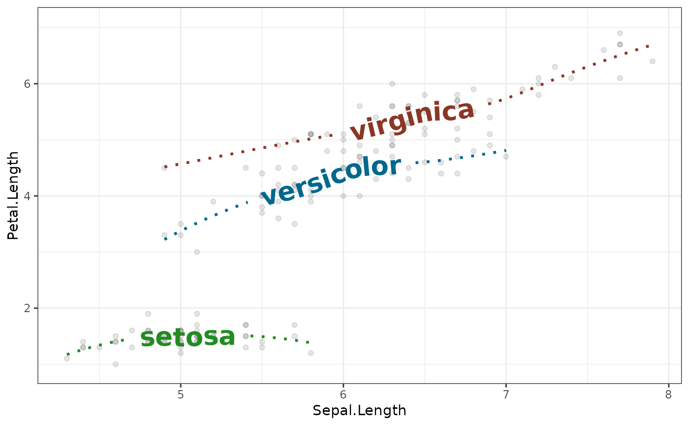

Smoothed conditional means are available
in ggplot2 via geom_smooth. This geom
layer simply adds a text label to each curve that follow the contour of
this line when used as a drop-in replacement for
geom_smooth
Usage
geom_textsmooth(
mapping = NULL,
data = NULL,
stat = "smooth",
position = "identity",
...,
method = NULL,
formula = NULL,
na.rm = FALSE,
method.args = list(),
orientation = NA,
show.legend = NA,
inherit.aes = TRUE
)
geom_labelsmooth(
mapping = NULL,
data = NULL,
stat = "smooth",
position = "identity",
method = NULL,
formula = NULL,
na.rm = FALSE,
method.args = list(),
orientation = NA,
show.legend = NA,
inherit.aes = TRUE,
...
)Arguments
- mapping
Set of aesthetic mappings created by
aes()oraes_(). If specified andinherit.aes = TRUE(the default), it is combined with the default mapping at the top level of the plot. You must supplymappingif there is no plot mapping.- data
The data to be displayed in this layer. There are three options:
If
NULL, the default, the data is inherited from the plot data as specified in the call toggplot().A
data.frame, or other object, will override the plot data. All objects will be fortified to produce a data frame. Seefortify()for which variables will be created.A
functionwill be called with a single argument, the plot data. The return value must be adata.frame, and will be used as the layer data. Afunctioncan be created from aformula(e.g.~ head(.x, 10)).- stat
Use to override the default connection between
geom_smooth()andstat_smooth().- position
Position adjustment, either as a string, or the result of a call to a position adjustment function.
- ...
Other arguments passed on to
layer. These are often aesthetics, used to set an aesthetic to a fixed value, likecolour = "red"orsize = 3. These can also be the following text-path parameters:gapA
logical(1)which ifTRUE, breaks the path into two sections with a gap on either side of the label. IfFALSE, the path is plotted as a whole. Alternatively, ifNA, the path will be broken if the string has avjustbetween 0 and 1, and not otherwise. The default for the label variant isFALSEand for the text variant isNA.uprightA
logical(1)which ifTRUE(default), inverts any text where the majority of letters would upside down along the path, to improve legibility. IfFALSE, the path decides the orientation of text.halignA
character(1)describing how multi-line text should be justified. Can either be"center"(default),"left"or"right".offsetA
unitobject of length 1 to determine the offset of the text from the path. If this isNULL(default), thevjustparameter decides the offset. If notNULL, theoffsetargument overrules thevjustsetting.parseA
logical(1)which ifTRUE, will coerce the labels into expressions, allowing for plotmath syntax to be used.straightA
logical(1)which ifTRUE, keeps the letters of a label on a straight baseline and ifFALSE(default), lets individual letters follow the curve. This might be helpful for noisy paths.paddingA
unitobject of length 1 to determine the padding between the text and the path when thegapparameter trims the path.text_smoothinga
numeric(1)value between 0 and 100 that smooths the text without affecting the line portion of the geom. The default value of0means no smoothing is applied.richA
logical(1)whether to interpret the text as html/markdown formatted rich text. Default:FALSE. See also the rich text section of the details ingeom_textpath().remove_longif TRUE, labels that are longer than their associated path will be removed.
- method
Smoothing method (function) to use, accepts either
NULLor a character vector, e.g."lm","glm","gam","loess"or a function, e.g.MASS::rlmormgcv::gam,stats::lm, orstats::loess."auto"is also accepted for backwards compatibility. It is equivalent toNULL.For
method = NULLthe smoothing method is chosen based on the size of the largest group (across all panels).stats::loess()is used for less than 1,000 observations; otherwisemgcv::gam()is used withformula = y ~ s(x, bs = "cs")withmethod = "REML". Somewhat anecdotally,loessgives a better appearance, but is \(O(N^{2})\) in memory, so does not work for larger datasets.If you have fewer than 1,000 observations but want to use the same
gam()model thatmethod = NULLwould use, then setmethod = "gam", formula = y ~ s(x, bs = "cs").- formula
Formula to use in smoothing function, eg.
y ~ x,y ~ poly(x, 2),y ~ log(x).NULLby default, in which casemethod = NULLimpliesformula = y ~ xwhen there are fewer than 1,000 observations andformula = y ~ s(x, bs = "cs")otherwise.- na.rm
If
FALSE, the default, missing values are removed with a warning. IfTRUE, missing values are silently removed.- method.args
List of additional arguments passed on to the modelling function defined by
method.- orientation
The orientation of the layer. The default (
NA) automatically determines the orientation from the aesthetic mapping. In the rare event that this fails it can be given explicitly by settingorientationto either"x"or"y". See the Orientation section for more detail.- show.legend
logical. Should this layer be included in the legends?
NA, the default, includes if any aesthetics are mapped.FALSEnever includes, andTRUEalways includes. It can also be a named logical vector to finely select the aesthetics to display.- inherit.aes
If
FALSE, overrides the default aesthetics, rather than combining with them. This is most useful for helper functions that define both data and aesthetics and shouldn't inherit behaviour from the default plot specification, e.g.borders().
Aesthetics
geom_textdensity() understands the following aesthetics (required aesthetics are in bold):
xlabelalphaanglecolourfamilyfontfacegrouphjustlinecolourlineheightlinetypelinewidthsizespacingtextcolourvjust
In addition to aforementioned aesthetics, geom_labeldensity() also understands:
boxcolourboxlinetypeboxlinewidthfill
The spacing aesthetic allows fine control of spacing
of text, which is called 'tracking' in typography.
The default is 0 and units are measured in 1/1000 em.
Numbers greater than zero increase the spacing,
whereas negative numbers decrease the spacing.
Learn more about setting these aesthetics
in vignette("ggplot2-specs").
See also
Other geom layers that place text on paths.
Examples
ggplot(iris, aes(x = Sepal.Length, y = Petal.Length)) +
geom_point(alpha = 0.1) +
geom_textsmooth(aes(label = Species, colour = Species),
method = "loess", formula = y ~ x,
size = 7, linetype = 3, fontface = 2, linewidth = 1) +
scale_colour_manual(values = c("forestgreen", "deepskyblue4", "tomato4")) +
theme_bw() +
theme(legend.position = "none")
